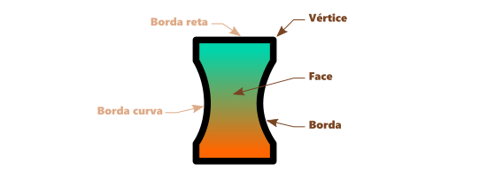
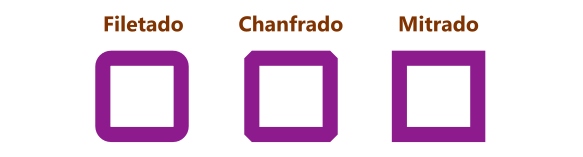
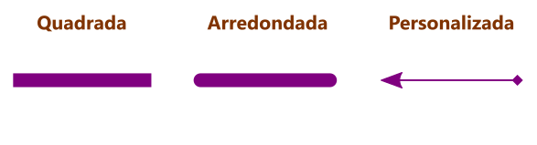
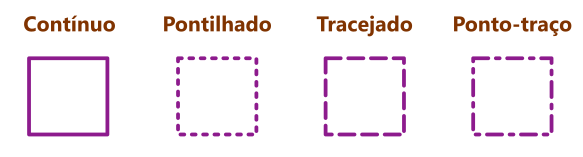
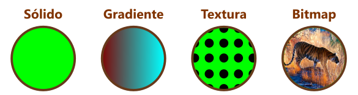
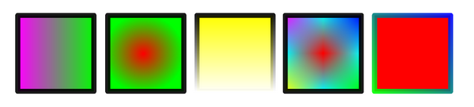
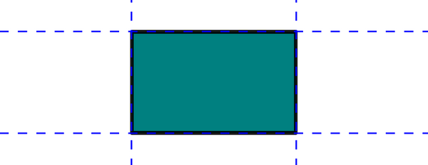
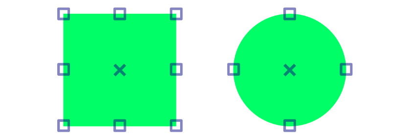
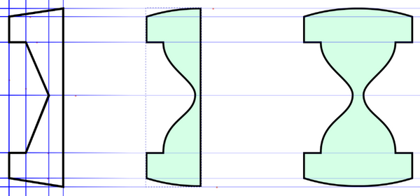
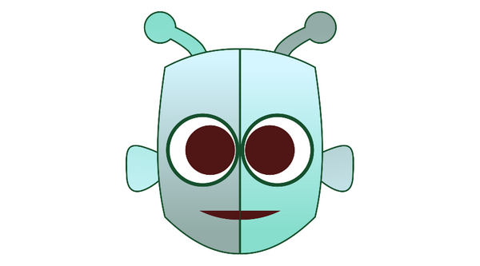

Vértice, borda e face
Como dito anteriormente, objetos abertos possuem vértices e bordas e objetos fechados possuem vértices, bordas e face, cada um destes elementos possui configuração própria, é o que veremos agora.
Para alterar configurações de vértice, borda e face no Inkscape, utilize a janela de encaixe Propriedades do Objeto, clique com o botão direito do mouse com o objeto selecionado para ativá-la.
Os vértices possuem propriedade de estilo de canto, que pode ser filetado (arredondado), chanfrado (quebrado) e mitrado (quadrado). Veja na imagem abaixo cada um:
Estilo de vértice
Estas configurações encontram-se na guia Estilos de Contorno da janela Propriedades de Objeto. Em curvas abertas temos ainda a opção de configurar o estilo de ponta das linhas, que pode ser quadrado, redondo ou personalizado, como você pode ver abaixo:
Estilo de ponta
Em relação à borda podemos configurar sua espessura e seu estilo. A espessura e o estilo da borda podem ser configurados na guia Estilo de Contorno da janela Propriedades do Objeto no Inkscape.
Veja abaixo os estilos de borda mais comuns:
Estilo de borda
Caso você precise utilizar o contorno de um objeto como se fosse uma face, a maioria das aplicações de desenho vetorial permitem converter contornos em objetos individuais. No Inkscape você pode encontrar essa opção no menu Caminho.
Nos objetos fechados podemos configurar a face com estilos de preenchimentos. Alguns programas permitem ainda configurar um preenchimento parcial em objetos abertos. Os estilos de preenchimento mais comuns são Cor Sólida, Gradiente, Textura (ou Hachura) e Bitmap, como você pode ver abaixo:
Estilo de preenchimento
Os estilos de face incluem ainda opacidade e mesclagem, no entanto estudaremos opacidade e mesclagem mais detalhadamente num tópico específico. Vamos treinar um pouco alguns estilos de preenchimento em nossos tutoriais rápidos. Como já sabemos como aplicar uma cor uniforme, clicando sobre ela na Paleta de Cores, veremos como aplicar variações.
Gradientes de cores
Faremos agora alguns tutoriais para aprendermos a aplicar gradientes em objetos. Para efetuar esses tutoriais, desenhe cinco retângulos em uma área vazia da tela, e a cada um aplique uma cor diferente de preenchimento e de contorno. Escolha um preenchimento claro e um contorno escuro. O resultado ao final destes tutoriais deverá ser parecido com esse:
Aplicando um gradiente linear
1. Selecione o primeiro retângulo.
2. Clique na ferramenta Gradiente na Barra de Ferramentas.
3. Clique e arraste de um lado ao outro do retângulo para aplicar o gradiente. Uma linha com uma alça em cada ponta aparecerá atravessando o retângulo de um lado ao outro.
4. Clique no primeiro nó e escolha uma cor na paleta de cores.
5. Clique no segundo nó e escolha outra cor na paleta.
6. Experimente mover os nós para alterar a posição e o tamanho do gradiente.
7. Pegue a ferramenta seleção novamente.
Aplicando um gradiente radial
1. Selecione o segundo retângulo.
2. Clique na ferramenta Gradiente.
3. Na Barra de Propriedades, selecione a opção Gradiente Radial dentre as opções no início da barra.
4. Clique e arraste do centro para a borda do retângulo.
5. Clique no nó do centro e escolha uma cor.
6. Clique no nó da borda e escolha outra cor.
7. Experimente mover os nós para alterar o tamanho, a forma e a rotação do gradiente.
8. Pegue a ferramenta seleção.
Aplicando uma transparência gradiente
1. Para aplicar uma transparência em gradiente, basta retirarmos a cor de uma das extremidades do gradiente.
2. Selecione o terceiro retângulo.
3. Clique na ferramenta gradiente.
4. Na barra de propriedades escolha a opção Gradiente Linear.
5. Clique e arraste sobre o retângulo para aplicar o gradiente.
6. Clique num dos nós e aplique uma cor, clique no outro e retire a cor clicando na opção Nenhum da paleta.
7. Pode parecer que o gradiente varia para o branco, isso porque o fundo da tela é branco, para perceber a transparência, pegue a ferramenta seleção e arraste o retângulo sobre os outros. Caso ele esteja por baixo, basta pressionar a tecla Home para enviá-lo para o topo.
Você pode criar transparências em gradientes lineares, radiais e de malha.
Aplicando uma malha de gradientes
1. Selecione o quarto retângulo.
2. Clique na ferramenta Malha.
3. Na Barra de Propriedades, altere o valor de Linhas e Colunas para 2.
4. Dê um duplo clique sobre o retângulo para aplicar a malha.
5. Clique nos nós e altere as cores como achar melhor.
6. Experimente mover os nós e as alças para alterar a variação dos gradientes. Os nós de uma malha funcionam exatamente como os nós de uma curva.
7. Pegue a ferramenta seleção novamente.
Aplicando gradiente ao contorno
1. Clique no quinto retângulo.
2. Clique na ferramenta Gradiente.
3. Na Barra de Propriedade selecione a opção Criar gradiente no contorno.
4. Clique e arraste sobre o objeto para aplicar o gradiente.
5. Clique nos nós e altere a cor como achar melhor.

Vamos exercitar o que aprendemos até agora criando o desenho abaixo. Abra um novo arquivo e salve em sua pasta com o nome Preenchimento e Contorno.svg.
Note no desenho que todos os elementos possuem gradientes, no caso do fundo ele transita entre duas cores e no caso da estrela e da linha ao seu redor ele transita para transparência. Note ainda que a extremidade da linha é arredondada.
Em alguns casos converter um contorno em caminho e usar operações booleanas para unir ou subtrair pode ajudar bastante.
Usando guias e snaps
As guias são elementos que auxiliam a desenhar e que não são impressas nem exportadas, trata-se de linhas infinitas que podemos criar arrastando das réguas para dentro da tela. Podemos ainda utilizar snaps de objetos para posicionar as guias.
Já os snaps são pontos magnéticos que ajudam a posicionar um objeto em relação a outro ou à página, ao aproximar uma ferramenta ou um objeto próximo de um snap, o cursor será atraído para ele, isso nos ajuda a desenhar com precisão. Todo software de desenho vetorial possui a função de snap, o que altera de um para outro é só o comportamento e a nomenclatura.
Inserir Guias
Para criar linhas guias você deve primeiro ativar as réguas, o que pode ser feito pelo atalho Ctrl+R ou pelo menu Visualizar → Exibir/Ocultar → Réguas. Em seguida, para inserir uma guia, basta clicar sobre a régua e arrastar para dentro da tela, a régua vertical insere guias verticais e a a régua horizontal insere guias horizontais, em alguns programas a ordem é oposta pois o método de inserção é diferente.
Utilizar Snaps
Para utilizar snaps basta configurá-los, o que pode ser feito com a Barra de Controle de Alinhamento que pode ser ativada pelo menu Visualizar → Exibir/Ocultar → Barra de Controle de Alinhamento. Em seguida basta ativar os snaps. Para cada tipo de necessidade haverá um tipo de snap específico, mas para facilitar seu trabalho, apenas ative todos, e quando precisar desligar, utilize o primeiro ícone, ou o atalho % (Shift+5).
Em outros programas pode não ser necessário configurar snaps, programas como Corel ou Illustrator já vem com essa função pré-configurada, dando ainda a opção de personalizá-la pelas configurações da aplicação.
Desenhando com Guias e Snaps
Observe o desenho abaixo, que é bem simples de ser feito, mas que pode se tornar mais fácil ainda utilizando snaps e guias. Como você pode notar na figura, faremos em três etapas.
1. Insira quatro guias verticais e sete horizontais como mostrado na figura 1.
2. Ative a Barra de Controle de Alinhamento e ative todos os snaps nela.
3. Pegue a ferramenta Bézier e utilize as guias para fazer a forma da figura 1.
4. Aperte % (Shift+5 em alguns teclados) para desativar os snaps.
5. Pegue a ferramenta Editor de Nós e ajeite a forma, deixando-a como na figura 2.
6. Pegue a ferramenta seleção, e com a forma selecionada pressione Ctrl+D para duplicá-la.
7. Arraste e cópia para fora.
8. Com a cópia selecionada aperte H para espelhá-la horizontalmente.
9. Ative os snaps novamente.
10. Utilizando-se dos snaps, encaixe a segunda forma na lateral de primeira.
11. Selecione as duas e pressione Ctrl+ para uni-las.
Estamos encerrando este segundo capítulo, até agora você deve ter assimilado todos os conceitos básicos para executar um desenho vetorial, é claro que ainda temos outros recursos que ainda veremos, mas o fundamental para se desenhar vetores você já assimilou bem. Agora neste exercício você será desafiado a fazer algo um pouco mais complexo e que pode ser feito com tudo o que aprendeu nestes dois capítulos. Veja o robozinho fofo que você fará:
Apesar de possuir mais elementos, é bem simples de se desenhar, note os gradientes nos preenchimentos, note ainda que ele é composto de duas partes idênticas, porém espelhadas.
Dica: Tudo começa com um retângulo!